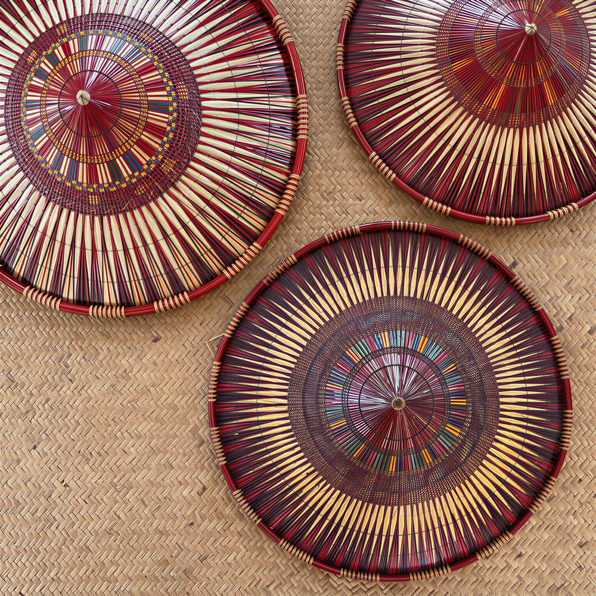
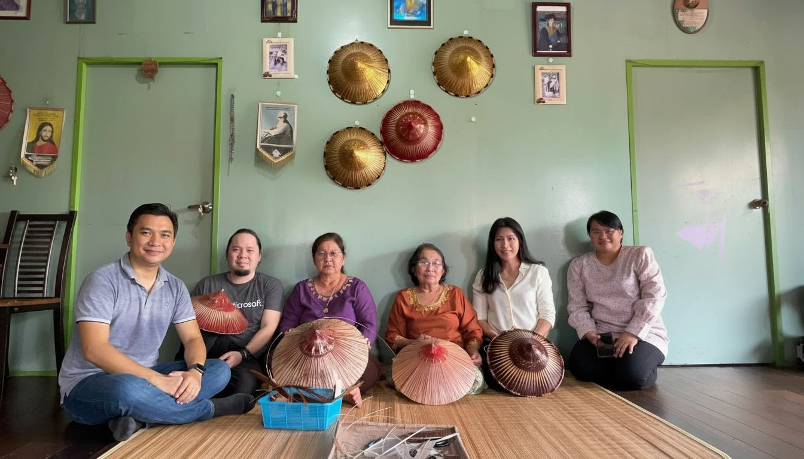
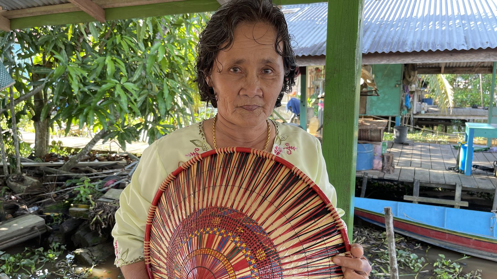
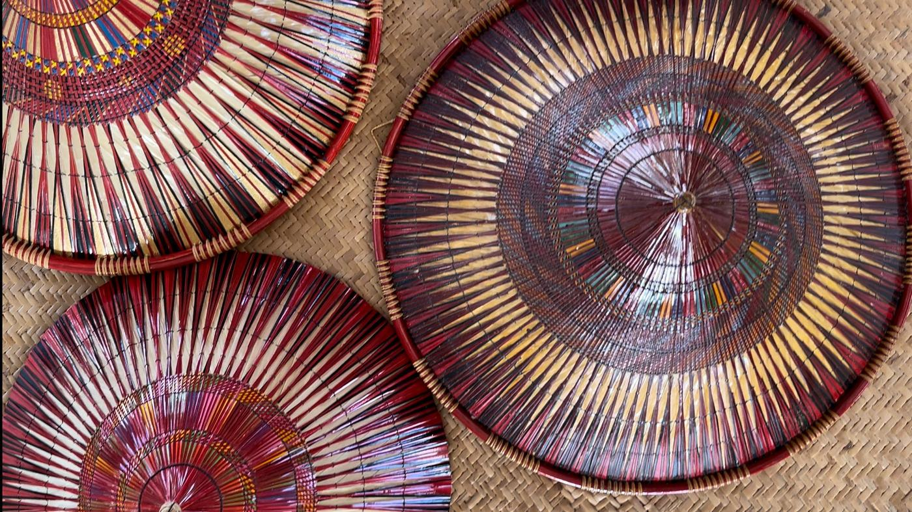
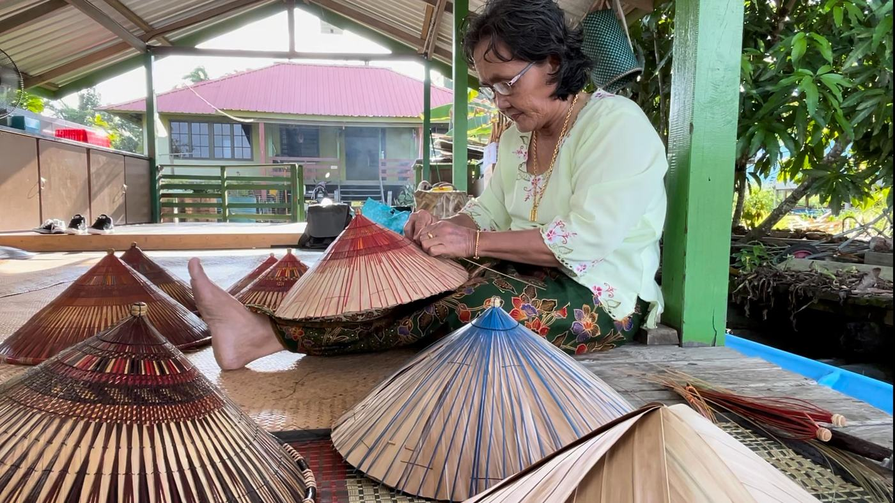
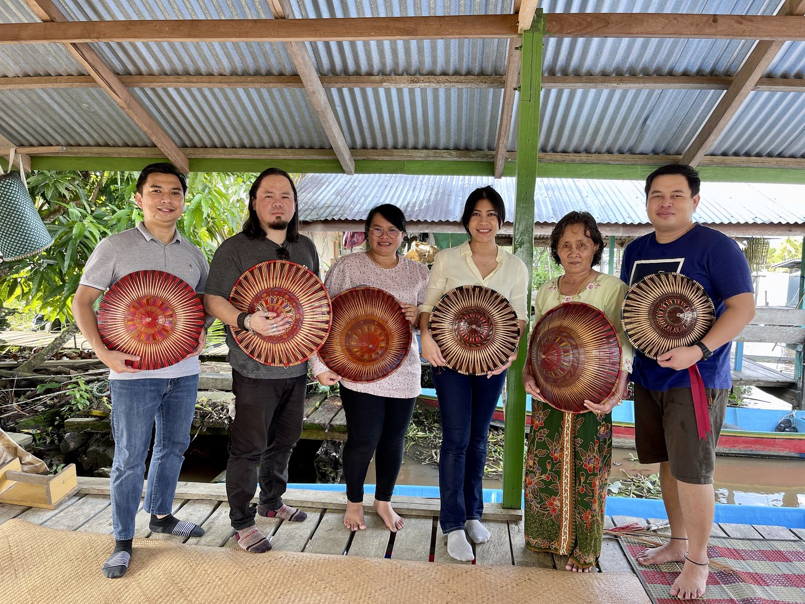
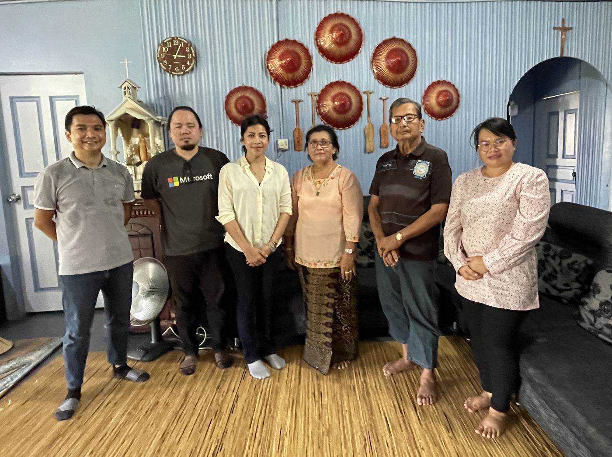
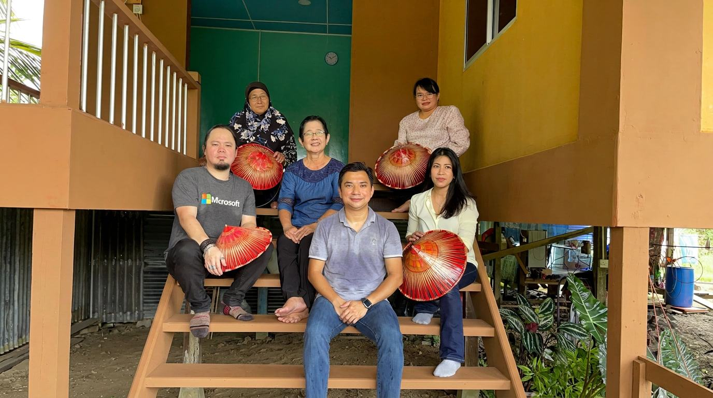

Weaving Stories in the Palm of a Hand
Mobile Documentary Storytelling of Melanau Terendak Ladies and Craftsmanship
- Community
- Melanau, Kampung Tanam
- Craft
- Terendak — traditional sunhat
- Method
- Mobile-phone documentary fieldwork
A hat that carries a whole culture in its weave.
This non-traditional research outcome (NTRO) focuses on the documentation and digital preservation of Terendak craftsmanship, a distinctive traditional sunhat made by the indigenous Melanau community of Kampung Tanam, Mukah, Sarawak.
Terendak is more than a utilitarian object; it is an expression of Melanau cultural identity, embodying generational knowledge, artistry, and a deep relationship with local materials. However, modernization has reduced intergenerational transmission, and raw material resources threaten the continuity of this heritage.


Filmed entirely on a phone, by design.
A team of researchers — Prof. Dr. Ida Fatimawati Adi Badiozaman, Ts. Augustus Raymond Segar, and Wilson Suai — took to the field in Kampung Tanam to capture the Terendak stories and the ladies who tell them, applying traditional patterns and narrating the cultural significance of each stage.
The research was carried out using a mobile-based documentary methodology, in which filming and audio recording were executed solely on a mobile phone.

An intimate, adaptive, and minimally intrusive engagement — one hat, and one story, at a time.
The mobile-based workflow is both a methodological innovation and a response to the accessibility challenges faced by independent researchers and community-based storytellers.From the research record
A digital record built to outlast the maker's hands.
The resulting digital archive preserves high-quality visual and oral accounts of Terendak making, ensuring that these techniques and stories remain accessible to future generations, educators, and cultural practitioners.



What a phone in a researcher's hand makes possible.
This approach enabled an intimate, adaptive, and minimally intrusive engagement with the community, while also demonstrating the democratizing potential and affordances of mobile technologies for cultural documentation.
Advances how portable, low-cost, user-friendly technologies can serve as legitimate tools for ethnographic and heritage studies.
Mobile media lets researchers and communities co-create narratives that are authentic, agile, and easily disseminated.
Prioritizes community trust, methodological accessibility, and the sustainability of indigenous knowledge in the digital age.

The significance of this work lies not only in preserving a fragile tradition, but in reframing how cultural heritage research is conducted.
Researchers, in the field with the community.
The project was carried out in close collaboration with the Terendak makers of Kampung Tanam, who welcomed the team into their homes and workspaces to demonstrate the craft, stage by stage.
